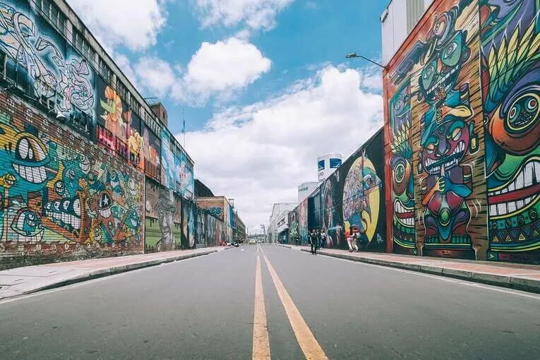
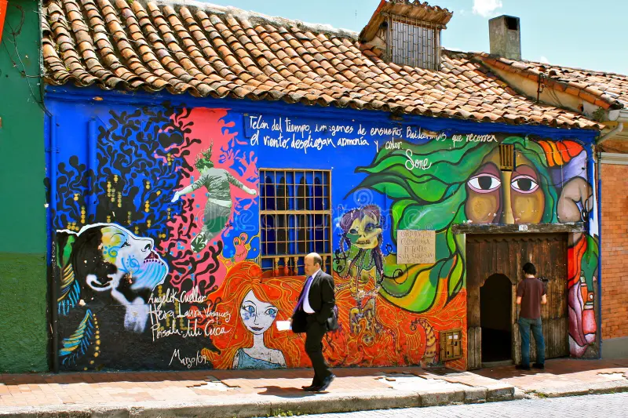
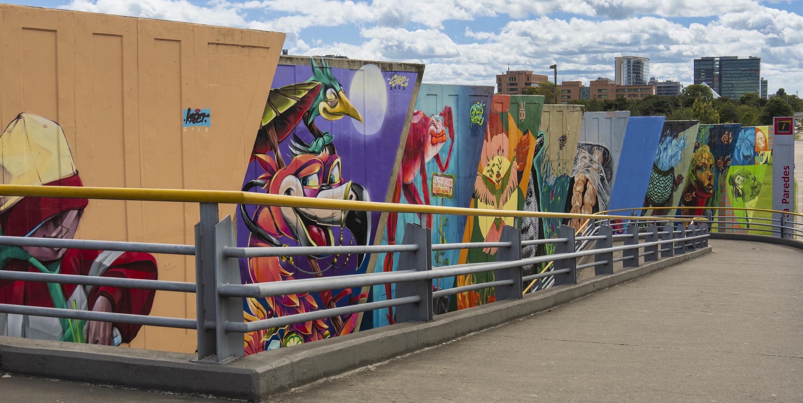
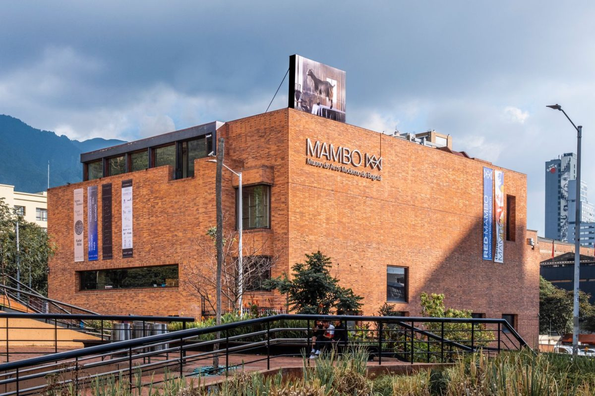
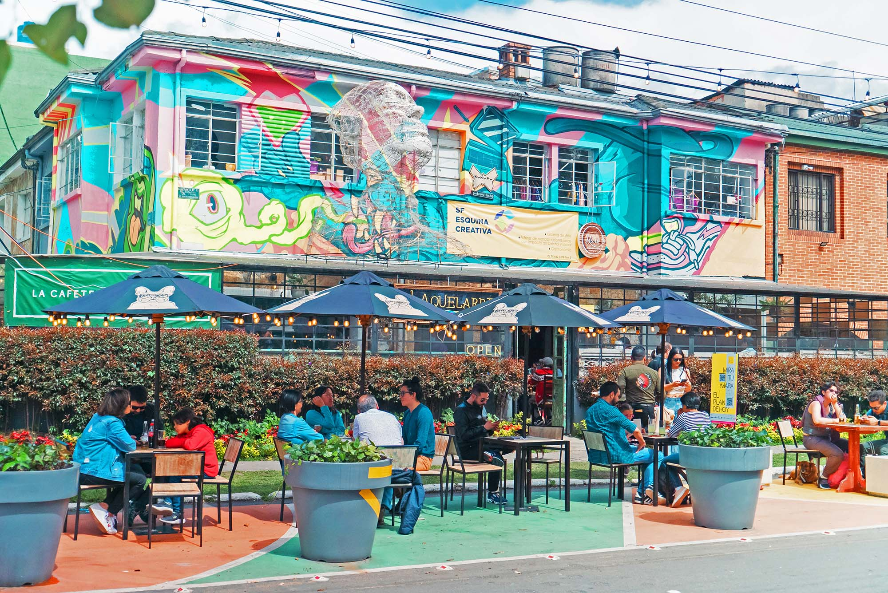

Expresiones Artísticas
Arte Urbano

Distrito Grafiti
Ubicado en la zona industrial de Puente Aranda, este proyecto ha transformado naves monumentales en una de las galerías a cielo abierto más grandes de Latinoamérica. Es un espacio donde artistas locales e internacionales convergen para plasmar murales de gran formato que exploran la identidad, el surrealismo y la crítica social, convirtiendo el gris industrial en un estallido de color y cultura urbana.

Murales de La Candelaria
El centro histórico no solo guarda arquitectura colonial, sino que sus muros narran historias contemporáneas de resistencia y tradición. Los grafitis en fachadas centenarias crean un contraste visual fascinante, donde el arte urbano dialoga con la memoria de la ciudad, convirtiendo cada esquina en una parada obligatoria para los amantes de la narrativa visual y el simbolismo local.

Murales de la Calle 26
Esta avenida, columna vertebral que conecta el Aeropuerto El Dorado con el centro de la ciudad, se ha convertido en un corredor histórico plasmado en aerosol. A través de kilómetros de muros, diversos colectivos artísticos han retratado la biodiversidad, las luchas sociales y la esperanza del país, ofreciendo un recorrido visual que da la bienvenida a los visitantes con la fuerza del arte público.
Galerías y Museos

MAMBO
Diseñado por el arquitecto Rogelio Salmona, el MAMBO es el epicentro de las vanguardias artísticas en la capital. Su estructura de ladrillo custodia las propuestas más arriesgadas y experimentales del arte contemporáneo, funcionando como un laboratorio creativo que desafía las percepciones tradicionales y promueve el diálogo entre los artistas y la ciudadanía.

Fragmentos
Este 'contra-monumento', concebido por la artista Doris Salcedo, es un espacio de reflexión profunda sobre el conflicto y la paz en Colombia. El piso, forjado con el metal de armas fundidas, invita a los visitantes a caminar sobre la historia transformada en arte, creando un entorno de silencio y memoria que es único en el panorama artístico mundial.

Barrio San Felipe
Consolidado como el 'Distrito de Arte' por excelencia, este barrio residencial ha vivido una metamorfosis cultural sin precedentes. Sus casas se han convertido en galerías de vanguardia, estudios de diseño y talleres de artistas locales que abren sus puertas para fomentar un mercado de arte emergente y dinámico, posicionando a Bogotá como un referente en el circuito artístico internacional.